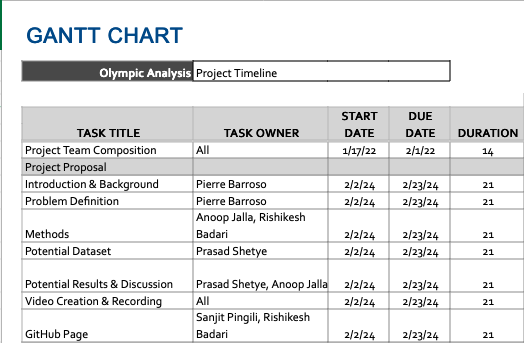
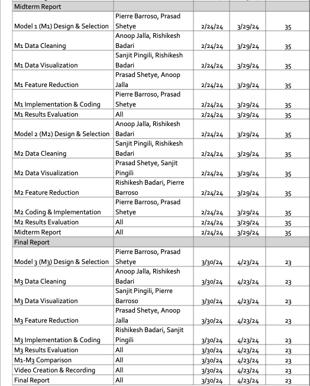

The Olympics, a pinnacle of athletic competition, attract global talent across various sports. Predictive modeling, born from academic and analytical intrigue, aims to forecast outcomes like medal distributions.
Dataset: Sourced from Kaggle, it contains diverse Olympic data, facilitating the development of predictive models for understanding and forecasting medal wins.
Kaggle DatasetPredicting medal likelihood in Olympic sports is challenging due to various factors like age, gender, physical attributes, and historical context. Crucial for optimizing athlete performance, strategic planning, and enhancing spectator experience.
Converted all the text labels to integers to be able to use all the ML models and statistics. Saved the correspondences to make the analysis more understandable.
Enhanced the dataset by aggregating data from the latest Olympic Games, specifically from Tokyo 2020 and Beijing 2022. Overcame the obstacle of the original source's inaccessibility by utilizing a new website that offers up-to-date and extensive athlete data.
Devised a script to systematically collect new data in batches of 10,000 entries to manage the time-intensive process, given the website's limitations. Efforts resulted in the creation of a new dataset containing 302,078 entries before cleaning (271,116 entries in the Kaggle dataset).
Evaluated the impact of missing values on the dataset and concluded that their exclusion would not significantly affect the dataset's size. Implemented a script that allows for the removal of rows with missing data, ensuring a clean and complete dataset for analysis.
Cleansed the dataset of partial entries to preserve data integrity. This process involved rectifying missing, incomplete, or inconsistent entries, which refined the Kaggle dataset from 271,116 to 206,165 usable records, and our new dataset from 302,078 to 226,514.
Successfully merged separate batches of newly collected data into a single, consolidated dataset, preparing it for the next stages of machine learning model training.
Plan to introduce additional preprocessing techniques such as scaling of numerical features to normalize data distributions and further feature encoding to transform categorical variables into a format that can be provided to machine learning algorithms.
These are the ML algorithms we implemented for the final report.
Selected for its ability to manage the complexity of Olympic medal prediction, effectively handling numerous features and their interactions without the risk of overfitting. Can identify most predictive factors for olympic success due to its ability to rank based on feature importance. It does not have major preprocessing requirements, making it optimal for the diverse and unscaled nature of olympic data.
Simple and fast to train, making it a good baseline model for the binary classification problem. It can provide insights into the importance and type of relationships between features and the probability of winning a medal (e.g., positive or negative influences).
Selected the model with the best trade-off between goodness of fit and simplicity. The chosen GMM provided nuanced clustering of athletes based on performance metrics and biographical information. Enabled a more targeted and insightful analytical approach to understanding athlete characteristics and performance.
DBSCAN was chosen for its ability to handle the complex and noisy nature of the Olympic dataset, effectively identifying clusters with varying shapes and sizes in an unsupervised manner. The algorithm's robustness to outliers and flexibility in defining clusters based on density make it suitable for uncovering patterns in the multi-dimensional athlete data. Additionally, the use of DBSCAN facilitates the interpretation of clusters in meaningful ways, providing insights that are critical for optimizing athlete performance and strategic planning.
The unsupervised learning approach explores the underlying structure of the athlete data, while the supervised learning approach focuses on predicting medal outcomes. The models performed well, indicating that age, height, weight, and sport are informative features. However, limitations and potential improvements should be considered, such as incorporating more data, trying different algorithms, and performing hyperparameter tuning.
Below are the GANTT charts depicting the project timeline:
 | Name | Contributions |
|---|---|
| Rishikesh Badari | Visualizations, Powerpoint slides, Results & Discussions |
| Pierre Barroso | Model Implementations, Visualizations, Results & Discussions |
| Anoop Jalla | Results and Discussion, Visualizations, Github Pages, Presentation |
| Sanjit Pingili | Visualizations, Results & Discussions, Powerpoint Slides, Presentation |
| Prasad Shetye | Model Implementations, Visualizations, Results & Discussion, Presentation |